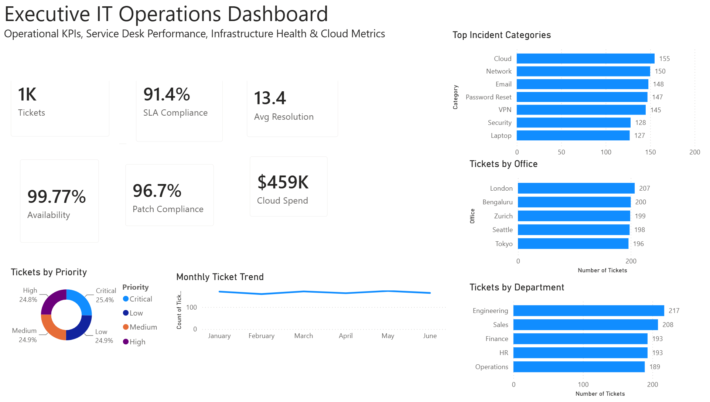

Executive Dashboard Portfolio
Executive Reporting • Business Intelligence • Decision Support
A growing portfolio of executive dashboards showcasing IT Operations, Cybersecurity, Governance, Risk Management, Infrastructure and Business Continuity using Microsoft Power BI.
Executive IT Operations Dashboard
Published • July 2026

Overview
Designed for CIOs and IT leadership, this dashboard consolidates operational health, service management, infrastructure performance, cybersecurity posture, asset lifecycle, and executive KPIs into a single executive reporting view.
The dashboard provides leadership with timely visibility into service quality, infrastructure reliability, operational trends, and security indicators to support informed decision-making.
Dashboard Portfolio Roadmap
Executive IT Operations
Version 1.0 • Published
Executive Cybersecurity
Planned
ISO 27001 & GRC
Planned
IT Service Management
Planned
Infrastructure & Cloud
Planned
Business Continuity & Disaster Recovery
Planned
Portfolio Notice
All dashboards use representative sample data created exclusively for demonstration purposes. No employer, customer, proprietary, or confidential information is included.